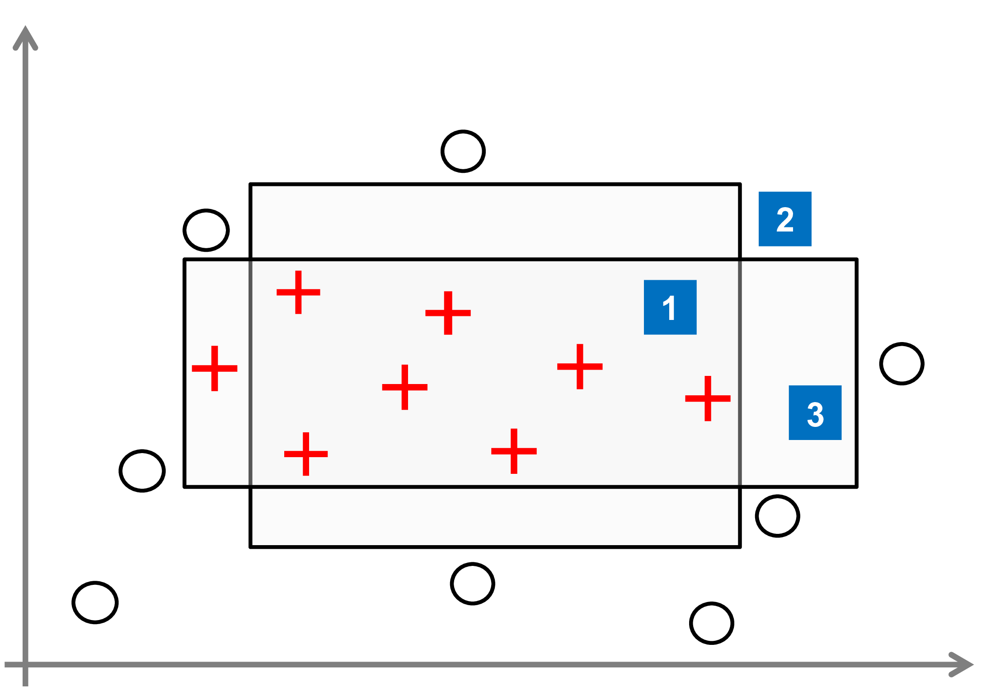

Modelling Approximation Uncertainty#
Bayesian inference can be seen as the main representative of probabilistic methods and provides a coherent framework for statistical reasoning that is well-established in machine learning (and beyond). Version space learning can be seen as a “logical” (and in a sense simplified) counterpart of Bayesian inference, in which hypotheses and predictions are not assessed numerically in terms of probabilities, but only qualified (deterministically) as being possible or impossible. In spite of its limited practical usefulness, version space learning is interesting for various reasons. In particular, in light of our discussion about uncertainty, it constitutes an interesting case: By construction, version space learning is free of aleatoric uncertainty, i.e., all uncertainty is epistemic.
Version Space Learning#
In the idealized setting of version space learning, we assume a deterministic dependency \(f^*:\, \cX \longrightarrow \cY\), i.e., the distribution ccp degenerates to
Moreover, the training data td is free of noise. Correspondingly, we also assume that classifiers produce deterministic predictions \(h(\vec{x}) \in \{ 0, 1 \}\) in the form of probabilities 0 or 1. Finally, we assume that \(f^* \in \cH\), and therefore \(h^* = f^*\) (which means there is no model uncertainty).
Under these assumptions, a hypothesis \(h \in \cH\) can be eliminated as a candidate as soon as it makes at least one mistake on the training data: in that case, the risk of \(h\) is necessarily higher than the risk of \(h^*\) (which is 0). The idea of the candidate elimination algorithm (Mitchell [Mit77]) is to maintain the version space \(\mathcal{V} \subseteq \cH\) that consists of the set of all hypotheses consistent with the data seen so far:
Obviously, the version space is shrinking with an increasing amount of training data, i.e., \(\mathcal{V}(\cH , \cD') \subseteq \mathcal{V}(\cH , \cD)\) for \(\cD \subseteq \cD'\).
If a prediction \(\hat{y}_{q}\) for a query instance \(\vec{x}_{q}\) is sought, this query is submitted to all members \(h \in \mathcal{V}\) of the version space. Obviously, a unique prediction can only be made if all members agree on the outcome of \(\vec{x}_{q}\). Otherwise, several outcomes \(y \in \mathcal{Y}\) may still appear possible. Formally, mimicking the logical conjunction with the minimum operator and the existential quantification with a maximum, we can express the degree of possibility or plausibility of an outcome \(y \in \mathcal{Y}\) as follows (\(\llbracket \cdot \rrbracket\) denotes the indicator function):
Thus, \(\pi(y)=1\) if there exists a candidate hypothesis \(h \in \mathcal{V}\) such that \(h(\vec{x}_{q}) = y\), and \(\pi(y)=0\) otherwise. In other words, the prediction produced in version space learning is a subset
See Fig. 1 for an illustration.

Fig. 1 Set-based versus distributional knowledge representation on the level of predictions, hypotheses, and models. In version space learning, the model class is fixed, and knowledge about hypotheses and outcomes is represented in terms of sets (blue color). In Bayesian inference, sets are replaced by probability distributions (gray shading). Theories like possibility and evidence theory are in-between, essentially working with sets of distributions. Credal inference (cf. Section credal) generalizes Bayesian inference by replacing a single prior with a set of prior distributions (here identified by a set of hyper-parameters). In hierarchical Bayesian modeling, this set is again replaced by a distribution, i.e., a second-order probability.#
Note that the inference (2) can be seen as a kind of constraint propagation, in which the constraint \(h \in \mathcal{V}\) on the hypothesis space \(\cH\) is propagated to a constraint on \(\cY\), expressed in the form of the subset (3) of possible outcomes; or symbolically:
This view highlights the interaction between prior knowledge and data: It shows that what can be said about the possible outcomes \(y_{q}\) not only depends on the data \(\cD\) but also on the hypothesis space \(\cH\), i.e., the model assumptions the learner starts with. The specification of \(\mathcal{H}\) always comes with an inductive bias, which is indeed essential for learning from data Mitchell [Mit80]. In general, both aleatoric and epistemic uncertainty (ignorance) depend on the way in which prior knowledge and data interact with each other. Roughly speaking, the stronger the knowledge the learning process starts with, the less data is needed to resolve uncertainty. In the extreme case, the true model is already known, and data is completely superfluous. Normally, however, prior knowledge is specified by assuming a certain type of model, for example a linear relationship between inputs \(\vec{x}\) and outputs \(y\). Then, all else (namely the data) being equal, the degree of predictive uncertainty depends on how flexible the corresponding model class is. Informally speaking, the more restrictive the model assumptions are, the smaller the uncertainty will be. This is illustrated in Fig. 2 for the case of binary classification.
{kind=link}

Fig. 2 Two examples illustrating predictive uncertainty in version space learning for the case of binary classification. In the first example (above), the hypothesis space is given in terms of rectangles (assigning interior instances to the positive class and instances outside to the negative class). Both pictures show some of the (infinitely many) elements of the version space. Top left: Restricting \(\mathcal{H}\) to axis-parallel rectangles, the first query point is necessarily positive, the second one necessarily negative, because these predictions are produced by all \(h \in \mathcal{V}\). As opposed to this, both positive and negative predictions can be produced for the third query. Top right: Increasing flexibility (or weakening prior knowledge) by enriching the hypothesis space and also allowing for non-axis-parallel rectangles, none of the queries can be classified with certainty anymore. In the second example (below), hypotheses are linear and quadratic discriminant functions, respectively. Bottom left: If the hypothesis space is given by linear discriminant functions, all hypothesis consistent with the data will predict the query instance as positive. Bottom right: Enriching the hypothesis space with quadratic discriminants, the members of the version space will no longer vote unanimously: some of them predict the positive and others the negative class.#
Coming back to our discussion about uncertainty, it is clear that version space learning as outlined above does not involve any kind of aleatoric uncertainty. Instead, the only source of uncertainty is a lack of knowledge about \(h^*\), and hence of epistemic nature. On the model level, the amount of uncertainty is in direct correspondence with the size of the version space \(\mathcal{V}\) and reduces with an increasing sample size. Likewise, the predictive uncertainty could be measured in terms of the size of the set (3) of candidate outcomes. Obviously, this uncertainty may differ from instance to instance, or, stated differently, approximation uncertainty may translate into prediction uncertainty in different ways.
In version space learning, uncertainty is represented in a purely set-based manner: the version space \(\mathcal{V}\) and prediction set \(Y(x_q)\) are subsets of \(\mathcal{H}\) and \(\mathcal{Y}\), respectively. In other words, hypotheses \(h \in \mathcal{H}\) and outcomes \(y \in \mathcal{Y}\) are only qualified in terms of being possible or not. In the following, we discuss the Bayesian approach, in which hypotheses and predictions are qualified more gradually in terms of probabilities.
Bayesian Inference#
Consider a hypothesis space \(\cH\) consisting of probabilistic predictors, that is, hypotheses \(h\) that deliver probabilistic predictions \(p_h(y \given \vec{x}) = p(y \vert \vec{x}, h)\) of outcomes \(y\) given an instance \(\vec{x}\). In the Bayesian approach, \(\cH\) is supposed to be equipped with a prior distribution \(p(\cdot)\), and learning essentially consists of replacing the prior by the posterior distribution:
where \(p(\cD \vert h)\) is the probability of the data given \(h\) (the likelihood of \(h\)). Intuitively, \(p( \cdot \vert \cD)\) captures the learner’s state of knowledge, and hence its epistemic uncertainty: The more ``peaked’’ this distribution, i.e., the more concentrated the probability mass in a small region in \(\mathcal{H}\), the less uncertain the learner is. Just like the version space \(\mathcal{V}\) in version space learning, the posterior distribution on \(\mathcal{H}\) provides global (averaged/aggregated over the entire instance space) instead of local, per-instance information. For a given query instance \(\vec{x}_{q}\), this information may translate into quite different representations of the uncertainty regarding the prediction \(\haty_{q}\) (cf.\ Fig.\ \ref{fig:bayesian}).
More specifically, the representation of uncertainty about a prediction \(\haty_{q}\) is given by the image of the posterior \(p( h \vert \cD)\) under the mapping \(h \mapsto p(y \vert \vec{x}_{q}, h)\) from hypotheses to probabilities of outcomes. This yields the predictive posterior distribution
In this type of (proper) Bayesian inference, a final prediction is thus produced by \emph{model averaging}: The predicted probability of an outcome \(y \in \cY\) is the \emph{expected} probability \(p(y \vert \vec{x}_{q}, h)\), where the expectation over the hypotheses is taken with respect to the posterior distribution on \(\cH\); or, stated differently, the probability of an outcome is a weighted average over its probabilities under all hypotheses in \(\cH\), with the weight of each hypothesis \(h\) given by its posterior probability \(p( h \vert \cD)\). Since model averaging is often difficult and computationally costly, sometimes only the single hypothesis
with the highest posterior probability is adopted, and predictions on outcomes are derived from this hypothesis.
In (6), aleatoric and epistemic uncertainty are not distinguished any more, because epistemic uncertainty is “averaged out.” Consider the example of coin flipping, and let the hypothesis space be given by \(\mathcal{H} \{ h_\alpha \with 0 \leq \alpha \leq 1 \}\), where \(h_\alpha\) is modeling a biased coin landing heads up with a probability of \(\alpha\) and tails up with a probability of \(1- \alpha\). According to (6), we derive a probability of \(1/2\) for heads and tails, regardless of whether the (posterior) distribution on \(\mathcal{H}\) is given by the uniform distribution (all coins are equally probable, i.e., the case of complete ignorance) or the one-point measure assigning probability 1 to \(h_{1/2}\) (the coin is known to be fair with complete certainty):
for the uniform measure \(p\) (with probability density function \(p(\alpha) \equiv 1\)) as well as the measure \(p'\) with probability mass function \(p'(\alpha) = 1\) if \(\alpha = \frac{1}{2}\) and \(= 0\) for \(\alpha \neq \frac{1}{2}\). Obviously, MAP inference (7) does not capture epistemic uncertainty either.
More generally, consider the case of binary classification with \(\cY \{ -1, +1 \}\) and \(p_h(+1 \vert \vec{x}_{q})\) the probability predicted by the hypothesis \(h\) for the positive class. Instead of deriving a distribution on \(\mathcal{Y}\) according to (6), one could also derive a predictive distribution for the (unknown) probability \(q p(+1 \vert \vec{x}_q)\) of the positive class:
This is a second-order probability, which still contains both aleatoric and epistemic uncertainty.
The question of how to quantify the epistemic part of the uncertainty is not at all obvious, however. Intuitively, epistemic uncertainty should be reflected by the variability of the distribution (8): the more spread the probability mass over the unit interval, the higher the uncertainty seems to be. But how to put this into quantitative terms? Entropy is arguably not a good choice, for example, because this measure is invariant against redistribution of probability mass. For instance, the distributions \(p\) and \(p'\) with
\(p(q \vert \vec{x}_{q}) 12(q-\frac{1}{2})^2\) and \(p'(q \vert \vec{x}_{q}) 3 - p(q \vert \vec{x}_{q})\) both have the same entropy, although they correspond to quite different states of information.
From this point of view, the variance of the distribution would be better suited, but this measure has other deficiencies (for example, it is not maximized by the uniform distribution, which could be considered as a case of minimal informedness).
The difficulty of specifying epistemic uncertainty in the Bayesian approach is rooted in the more general difficulty of representing a lack of knowledge in probability theory. This issue will be discussed next.
Representing a lack of knowledge#
As already said, uncertainty is captured in a purely set-based way in version space learning: \(\mathcal{V} \subseteq \mathcal{H}\) is a set of candidate hypotheses, which translates into a set of candidate outcomes \(Y \subseteq \mathcal{Y}\) for a query \(\vec{x}_{q}\). In the case of sets, there is a rather obvious correspondence between the degree of uncertainty in the sense of a lack of knowledge and the size of the set of candidates: Proceeding from a reference set \(\Omega\) of alternatives, assuming some ground-truth \(\omega^* \in \Omega\), and expressing knowledge about the latter in terms of a subset \(C \subseteq \Omega\) of possible candidates, we can clearly say that the bigger \(C\), the larger the lack of knowledge. More specifically, for finite \(\Omega\), a common uncertainty measure in information theory is \(\log(|C|)\). Consequently, knowledge gets weaker by adding additional elements to \(C\) and stronger by removing candidates.
In standard probabilistic modeling and Bayesian inference, where knowledge is conveyed by a distribution \(p\) on \(\Omega\), it is much less obvious how to “weaken” this knowledge. This is mainly because the total amount of belief is fixed in terms of a unit mass that can be distributed among the elements \(\omega \in \Omega\). Unlike for sets, where an additional candidate \(\omega\) can be added or removed without changing the plausibility of all other candidates, increasing the weight of one alternative \(\omega\) requires decreasing the weight of another alternative \(\omega'\) by exactly the same amount.
Of course, there are also measures of uncertainty for probability distributions, most notably the (Shannon) entropy, which, for finite \(\Omega\), is given as follows:
However, these measures are primarily capturing the shape of the distribution, namely its “peakedness” or non-uniformity Dubois and Hüllermeier [DHullermeier07], and hence inform about the predictability of the outcome of a random experiment. Seen from this point of view, they are more akin to aleatoric uncertainty, whereas the set-based approach (i.e., representing knowledge in terms of a subset \(C \subseteq \Omega\) of candidates) is arguably better suited for capturing epistemic uncertainty.
For these reasons, it has been argued that probability distributions are less suitable for representing ignorance in the sense of a lack of knowledge Dubois et al. [DPS96]. For example, the case of complete ignorance is typically modeled in terms of the uniform distribution \(p \equiv 1/|\Omega|\) in probability theory; this is justified by the “principle of indifference” invoked by Laplace, or by referring to the principle of maximum entropy[1]. Then, however, it is not possible to distinguish between (i) precise (probabilistic) knowledge about a random event, such as tossing a fair coin, and (ii) a complete lack of knowledge due to an incomplete description of the experiment. This was already pointed out by the famous Ronald Fisher, who noted that “not knowing the chance of mutually exclusive events and knowing the chance to be equal are two quite different states of knowledge.”
Another problem in this regard is caused by the measure-theoretic grounding of probability and its additive nature. For example, the uniform distribution is not invariant under reparametrization (a uniform distribution on a parameter \(\omega\) does not translate into a uniform distribution on \(1/\omega\), although ignorance about \(\omega\) implies ignorance about \(1/\omega\)). Likewise, expressing ignorance about the length \(x\) of a cube in terms of a uniform distribution on an interval \([l,u]\) does not yield a uniform distribution of \(x^3\) on \([l^3 , u^3]\), thereby suggesting some degree of informedness about its volume. Problems of this kind render the use of a uniform prior distribution, often interpreted as representing epistemic uncertainty in Bayesian inference, at least debatable[2].
The argument that a single (probability) distribution is not enough for representing uncertain knowledge is quite prominent in the literature. Correspondingly, various generalizations of standard probability theory have been proposed, including imprecise probability Walley [Wal91], evidence theory Shafer [Sha76], Smets and Kennes [SK94], and possibility theory Dubois and Prade [DP88]. These formalisms are essentially working with sets of probability distributions, i.e., they seek to take advantage of the complementary nature of sets and distributions, and to combine both representations in a meaningful way (cf. Fig. 3). We also refer to Appendix \ref{app:unc} for a brief overview.

Fig. 3 Set-based versus distributional knowledge representation on the level of predictions, hypotheses, and models. In version space learning, the model class is fixed, and knowledge about hypotheses and outcomes is represented in terms of sets (blue color). In Bayesian inference, sets are replaced by probability distributions (gray shading). Theories like possibility and evidence theory are in-between, essentially working with sets of distributions. Credal inference (cf. Section credal) generalizes Bayesian inference by replacing a single prior with a set of prior distributions (here identified by a set of hyper-parameters). In hierarchical Bayesian modeling, this set is again replaced by a distribution, i.e., a second-order probability.#